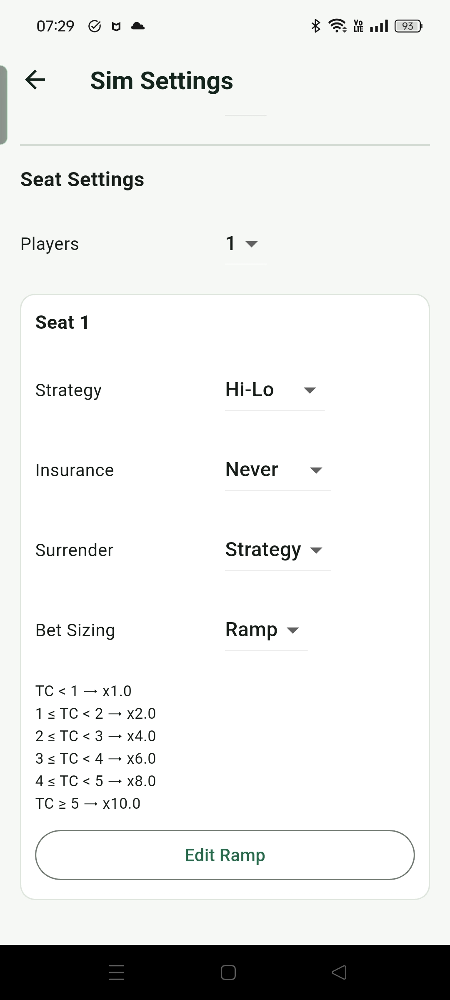
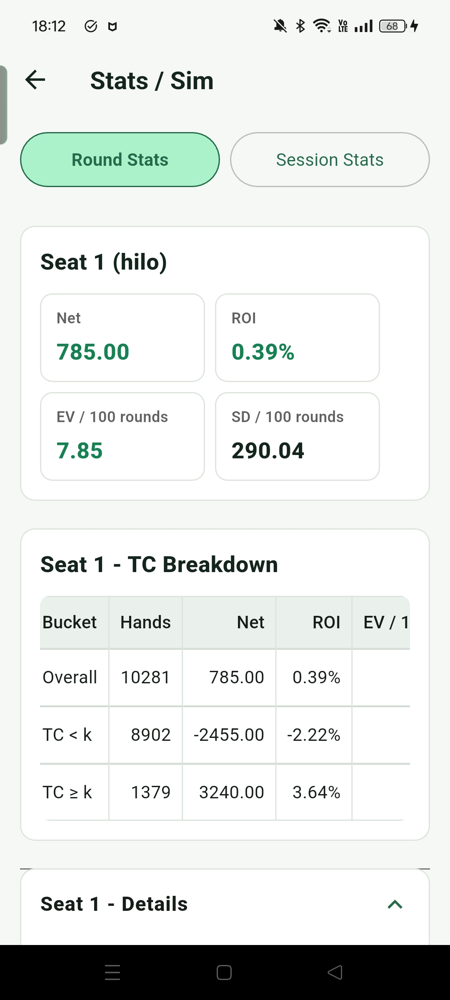
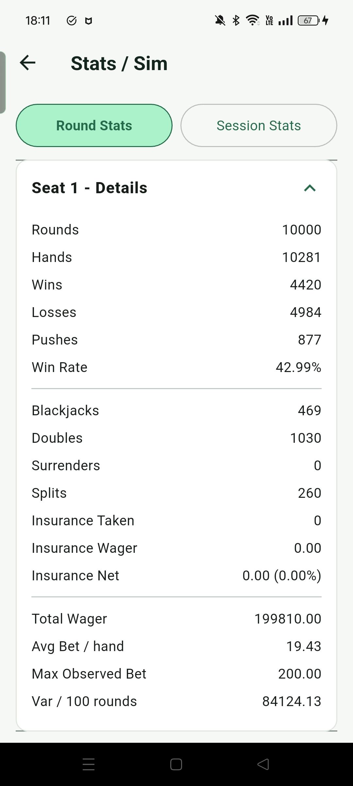
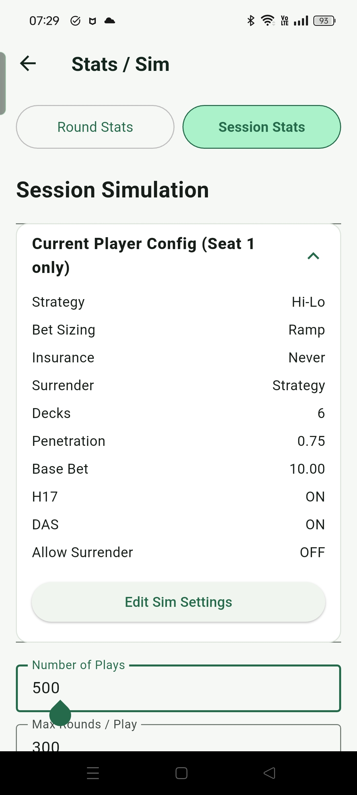
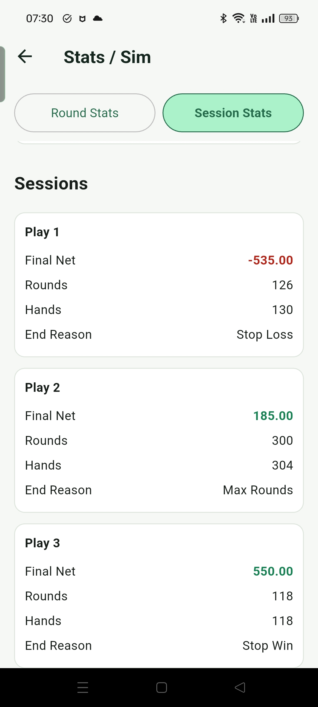

統計
統計機能は大量シミュレーションで長期結果を数値化し、ルール、戦略、座席、セッション設定ごとの EV、ROI、変動、リスクを比較できます。
ここでの統計は、戦略、ルール、ベット段階、分散の関係を理解するためのものであり、実際のプレイで同じ結果になることを保証するものではありません。Blackjack の優位は通常小さく、短期の変動は大きいです。シミュレーションで特定設定の EV や ROI が良く見えても、実際の結果は牌の変動、ルール、ペネトレーション、テーブルリミット、資金、実行の安定性に影響されます。これらの数値は学習と比較のためのもので、安定利益の約束として読むべきではありません。
ラウンド統計
Round Stats の基本は、まずテーブルルールと戦略を設定し、その条件に従ってコンピューターが大量のラウンドをシミュレーションすることです。戦略は Basic、Hi-Lo、Hi-Opt I から選べ、異なる Bet Ramp も組み合わせられます。surrender や insurance などを戦略や deviation に従って判断するかも設定できます。最大 500,000 ラウンドまで実行でき、完了後に統計結果で長期成績を比較します。
Blackjack の結果には明確な短期変動が残り、特にカウント戦略で bet ramp を使う場合はそれが目立ちます。多くのラウンドを走らせても、結果が理論確率と完全に一致するわけではありません。ただし別の見方をすると、これは実戦にも近い状態です。実際のプレイでは、すべての区間が EV 通りになるわけではなく、変動が起こります。同じ設定を何度か走らせることで、短期結果と長期期待値の距離を確認できます。
ラウンド数に加えて、Round Stats では TC threshold の k 値も設定できます。カウントが正の EV になり得る主な理由は、True Count が高い有利な区間にあります。k 値を設定すると、結果は TC が k 未満の区間と k 以上の区間に分けられ、高 TC 区間とそれ以外を比較しやすくなります。
Round Stats では、テーブルのプレイヤー数と各プレイヤーの戦略も設定できます。同じルール、同じテーブル、同じカード列の条件で、異なる戦略を比較できます。たとえば異なる Bet Ramp、surrender の有無、Basic と Hi-Lo の差などです。結果には純利益、ROI、EV / 100 ラウンド、SD / 100 ラウンドに加えて、surrender、insurance、split の回数、勝敗率などの詳細も表示され、各戦略が実際にどのような状況に遭遇するか理解しやすくなります。





セッション統計
Session Stats は、実際のプレイにより近い形で結果をシミュレーションする統計です。現実には、何万、何十万ラウンドを一度に連続して打つことは少なく、資金不足、損切り、利確の制限もあります。そのため、このモードではシミュレーションを 1 つ 1 つの Play に分けます。各 Play では最大ラウンド数、損切り額、利確額を設定し、Hi-Lo、Bet Ramp、ルール、その他の判断条件など同じ戦略設定を使えます。
損切りと利確の判定は、現在の Play の累積損益が設定値を超えたかどうかで行います。高 TC では大きなベットになることがあるため、1 ハンド終了後の Final Net が損切りや利確のしきい値を大きく超える場合があります。これは、しきい値で正確に止めるよりも実戦に近い動きです。
実行する Play 数を設定すると、Session Stats は各 Play の最終結果を集計します。結果には Final Net の平均値と中央値、勝敗比率、損切り・利確に到達した比率、1 Play あたりの平均 Hands と Rounds が含まれます。画面には簡単な分布図もあり、Play 終了時の損益分布をすばやく確認できます。
下部には各 Play の簡単な概要も残ります。内容は Final Net、Rounds、Hands、End Reason です。この設計は主に損切り、利確、資金管理の判断を助けるためのもので、大量の Round Stats だけを見るよりも現実に近い形です。カウントのシミュレーションは、短期変動が残るため理論 EV と大きく違うことがあります。特に bet spread が大きい場合はその差が目立ちます。同じ戦略を何度か走らせ、結果分布が安定しているか確認するのが有用です。



